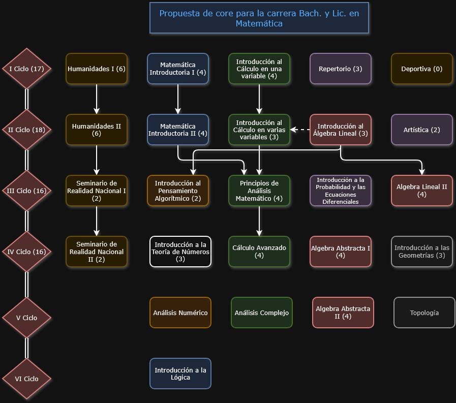

Coloque propuesta_core.png junto a este archivo y los PDF por curso. Ajuste los porcentajes en cada .hotspot si las cajas no
coinciden con el dibujo.

MA-01XX Matemática exploratoria MA-01XX Matemática para el cálculo MA-01XX Introducción al cálculo en una variable MA-02XX Cálculo en varias variables MA-0261 Álgebra lineal I MA-0361 Álgebra lineal II MA-02XX Introducción a las demostraciones CA03xx Pensamiento algorítmico I CA06xx Computación científica MA-0702 Análisis complejo MA-0625 Análisis real I MA-0725 Análisis real II MA-0615 Ecuaciones diferencialesNo se pudo cargar propuesta_core.png. Enlaces directos a los PDF (cuando existan):
Primer año
Segundo año
Tercer año